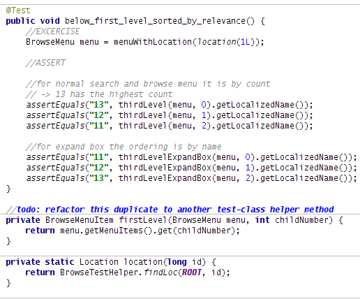
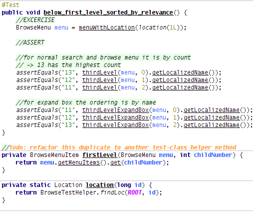

After all the decades of software development, and recently hyped trends (e.g. “programming in graphical diagrams”) plain text source code is still the most powerful way to build software systems. Regarding this a high degree of importance is readability and comprehension of source code. In fact you’re spending more time in reading as with writing code. Apart from improving the structure of the code itself (the refactoring concept plays a big role here) syntax highlighting is also very important to get a quick overview. Following gives an example how and why to tweak your editor defaults.
IDE defaults
Defaults from several IDEs or more simple text-editors are already giving big help, e.g. in showing keywords, instance fields or comments. Still in my view they can be tweaked, most of editors give options to extend things. Either they work with a graphical interface for changing settings (IDEs like IntelliJ, Eclipse etc.) or are working themselves with plain text highlighting configuration files (vim, krusader etc.). Your syntax highlighting toolbox contains text-decorations (like italic, underscored, bold) and coloring (foreground, background).
For my tweaks I used my favorite IDE IntelliJ, which offers many syntax highlighting options. Just checkout your editor and see what is possible.
Example BEFORE
Following annoyed me on the default settings:
- Could not instantly see parameters and variables
- No difference between local-vars and parameters
- Non-javadoc comments were too grey. I write comments to explain the ‘Why’ or a important block of a code statement. So comments should be better visible.
- Todo comments were blue. Blue is a too “friendly” color to me, whereas looking at todos should wake me up!
- Instance and static vars were colored the same though they have different semantics.
- I tend to use more smaller methods as one monster method. The default highlighting does not separate between method declarations and calls.
The BEFORE snippet:

Example AFTER
I changed settings to:
- Non-instance + static variables are blue now. Parameters should be handled with more care. (changing them side-effect the callee), so they are bold.
- Static and instance vars have different colors now (pink vs. violet).
- Comments have slight green background now.
- Todo flags have the signal-color orange
- Methods are underscored. Declarations are bold, calls are non-bold.
The AFTER snippet:


0 responses
You must log in to post a comment.